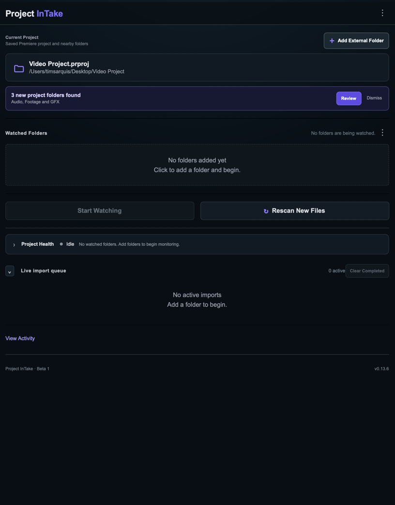
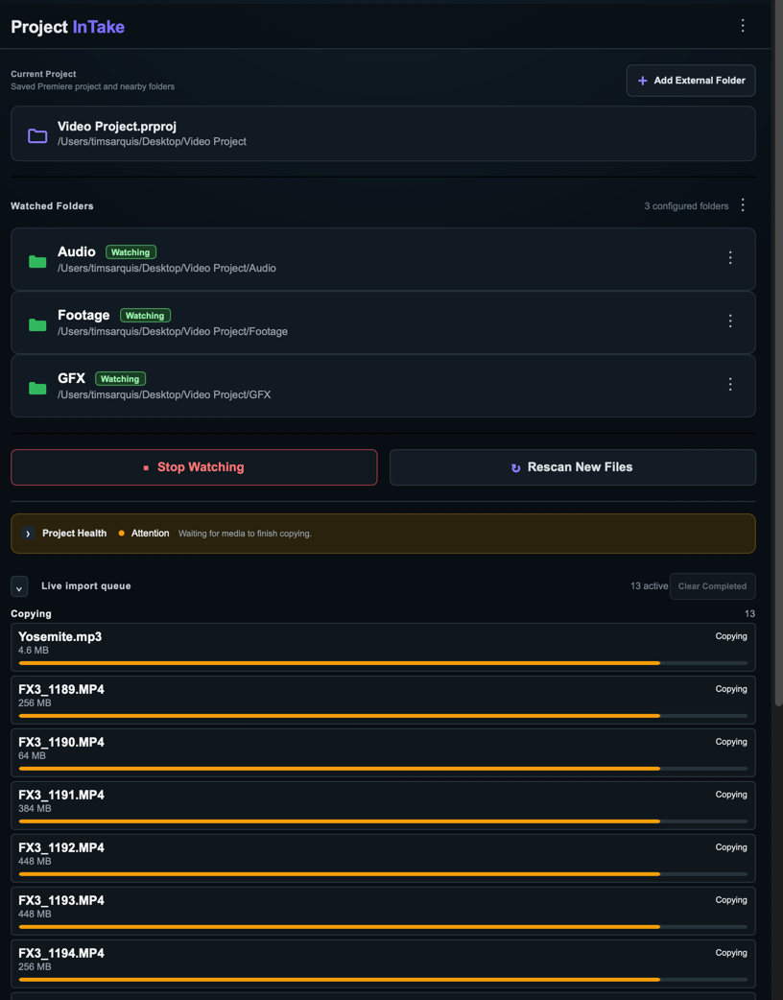
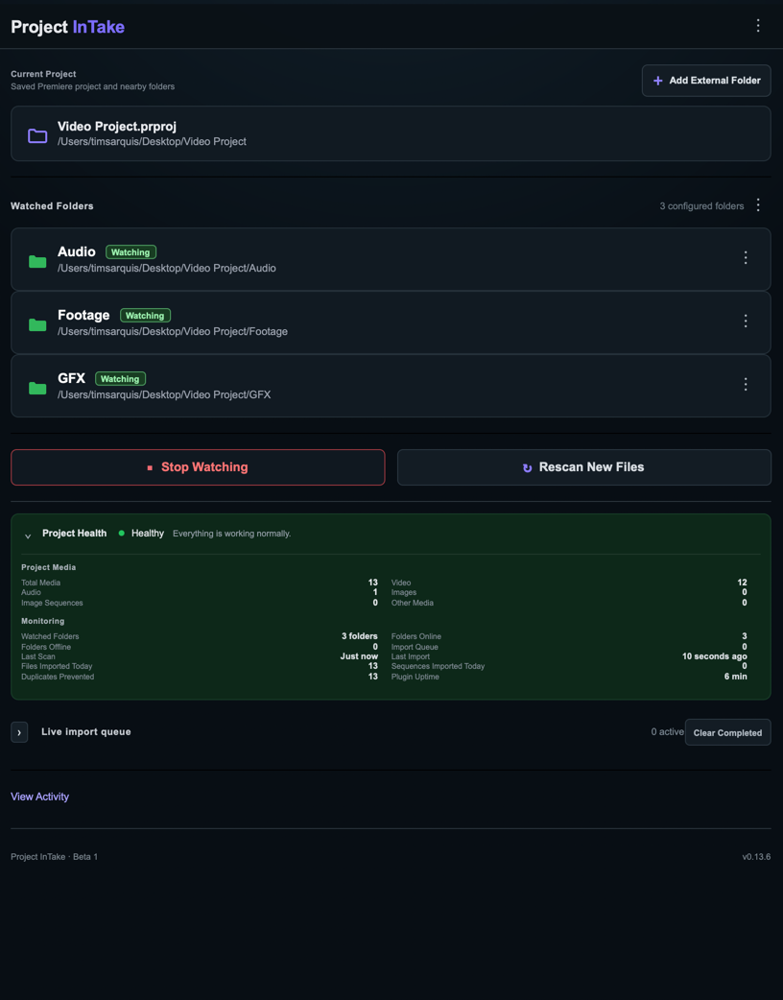

Drop files. Keep editing.
Both editions watch your selected media location in the background and bring new footage into Premiere automatically.
Project InTake automatically watches, organizes, and imports new media—so you can stay in the edit.

Both editions watch your selected media location in the background and bring new footage into Premiere automatically.
Pro mirrors folders and subfolders as matching Premiere bins. Lite keeps incoming media together in one flat bin.
Files import only after copying is complete. Full-path duplicate protection keeps every ingest clean and intentional.
Lite keeps automatic ingest simple and free. Pro is built for larger projects that need deeper folder organization, recovery, monitoring, and control.
One watched folder, one clean bin, and automatic ingest without extra setup.
Download Lite v1.0.0 ↓ Free · macOS & Windows · Premiere Pro 25.6+Multiple-folder ingest with mirrored bins, recovery tools, image sequences, diagnostics, and Project Health.
Planned for Adobe Marketplace
Every saved Premiere project keeps its own watched folders and settings. Reopen a project and monitoring resumes right where you left it.
A new media file lands in a watched folder.
InTake waits until the copy is complete and readable.
Lite uses one bin. Pro creates bins that mirror your folders.
Premiere confirms the media before it enters ingest history.
Project Health gives you a compact read on watched folders, queued files, recent imports, duplicates prevented, and plugin uptime.

Everything to know about Lite today and the upcoming Pro edition.
Project InTake is a native Premiere Pro plugin that watches folders connected to your project and automatically imports new media. Both editions wait for copies to finish, prevent duplicate imports, and remember settings for each Premiere project.
Lite is free and focused: it watches one folder without subfolders and imports media into one flat Project Intake Lite bin. Pro is designed for multiple watched folders, mirrored folder structures, image sequences, missing-media re-ingest, unavailable-folder recovery, Project Health, diagnostics, and advanced controls.
Download Project InTake Lite v1.0.0 directly from this page. The ZIP includes the installer and README. Pro is currently in testing and is planned for Adobe Marketplace.
.ccx file.Developer Mode is not required for a packaged .ccx installation. Adobe may display a warning for a privately distributed plugin; install only the package downloaded from this site.
Project InTake is available for macOS and Windows and requires Adobe Premiere Pro version 25.6 or newer.
Lite watches one folder at a time. Selecting another folder replaces the current selection.
Lite imports files directly inside one watched folder into one flat Project Intake Lite bin. Pro scans multiple folders and subfolders and mirrors their structure as Premiere bins. Both wait until copying is complete and prevent duplicate imports.
Lite remembers imported-file history for each Premiere project so the same file is not repeatedly imported. Pro also indexes media already in Premiere and compares normalized full paths, so identically named files in different folders remain distinct.
Lite detects likely numbered image sequences and skips them rather than importing hundreds of individual frames. Pro groups and imports supported numbered files as image sequences after they stabilize.
Both editions remember their selected folders for each Premiere project. Lite may require you to select the folder again after access is lost. Pro retains unavailable folders, continues watching available locations, and resumes monitoring automatically when they return.
Both editions preserve ingest history so deleted items are not automatically imported again. Pro adds an explicit Re-ingest Missing Media… workflow for selected recovery. Lite does not include manual re-ingest.
Lite provides a compact status message beneath its controls. Pro adds Project Health with watched and unavailable folders, queued files, recent scans and imports, duplicate prevention, uptime, and Healthy, Attention, Error, or Idle states.
In Lite, confirm that watching is active, make sure the file is directly inside the selected folder rather than a subfolder, and allow time for the copy to finish. In Pro, also check the Live Import Queue, use Rescan New Files, and review Project Health.
No. Project InTake operates locally. It does not upload media or directly modify the Premiere project file. Watched folders, monitoring state, ingest history, and related settings are stored in the plugin's private UXP data.
Pro includes Help → Export Diagnostic Report and an Open Support Email action. Lite does not include advanced diagnostics, so include your Premiere version, operating system, and reproduction steps when contacting projectintakeplugin@gmail.com.
Project InTake Lite is available now as a free download. Pro is currently in testing and is planned for Adobe Marketplace.